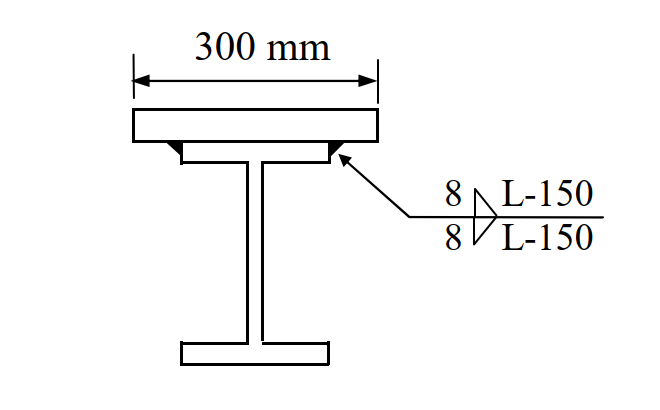

<!DOCTYPE html>
<html lang="zh-Hant"><head><meta charset="UTF-8">
<meta name="viewport" content="width=device-width, initial-scale=1.0">
<title>SS-2019-4 — 題目解析</title>
<link rel="stylesheet" href="../assets/katex/katex.min.css">
<script defer src="../assets/katex/katex.min.js"></script>
<script defer src="../assets/katex/auto-render.min.js"
  onload="renderMathInElement(document.body,{delimiters:[{left:'$$',right:'$$',display:true},
  {left:'$',right:'$',display:false},{left:'\\(',right:'\\)',display:false}],throwOnError:false});"></script>
<style>
:root{--ac:#1565c0;--bg:#f7f9fb;--card:#fff;--ink:#263238;--mut:#607d8b;--bd:#dfe6ea}
*{box-sizing:border-box}
body{margin:0;font-family:"Microsoft JhengHei","Noto Sans TC",-apple-system,sans-serif;
  background:var(--bg);color:var(--ink);line-height:1.75;font-size:15.5px}
header{background:linear-gradient(135deg,#0d47a1,#1976d2 60%,#42a5f5);color:#fff;padding:22px 26px}
header h1{margin:0;font-size:1.15em}
header .back{display:inline-block;margin-top:10px;font-size:.82em;color:#fff;background:rgba(255,255,255,.18);
  padding:4px 12px;border-radius:14px;text-decoration:none}
main{max-width:880px;margin:0 auto;padding:26px 22px 70px}
h1,h2,h3{color:#0d47a1} h2{font-size:1.2em;border-left:6px solid var(--ac);padding-left:12px;margin:34px 0 14px}
table{width:100%;border-collapse:collapse;margin:14px 0;font-size:.92em;background:#fff}
th,td{border:1px solid var(--bd);padding:7px 10px;text-align:left;vertical-align:top}
th{background:#eceff1;font-weight:600} tbody tr:nth-child(even){background:#fafcfd}
code{background:#eceff1;padding:1px 5px;border-radius:4px;font-size:.92em}
pre{background:#eceff1;padding:12px 14px;border-radius:8px;overflow-x:auto;font-size:.88em;line-height:1.5}
img{max-width:100%;display:block;margin:14px auto;border:1px solid var(--bd);border-radius:8px}
blockquote{border-left:4px solid #ffcc80;background:#fff3e0;margin:14px 0;padding:10px 16px;border-radius:0 8px 8px 0}
.katex-display{margin:12px 0!important;overflow-x:auto;overflow-y:hidden}
footer{text-align:center;color:var(--mut);font-size:.8em;padding:22px;border-top:1px solid var(--bd)}
</style></head><body>
<header><h1>SS-2019-4 題目解析</h1><a class="back" href="javascript:history.back()">&#8592; 返回講義</a></header>
<main><h1>SS-2019-4 解析</h1>
<h3>考題編號：SS-2019-4</h3>
<p><strong>主分類：</strong> <code>SS-U1-4</code> 接合之分析與設計<br />
<strong>副分類：</strong> <code>SS-U1-2</code>（梁桿件組合斷面）<br />
<strong>設計法：</strong> LRFD<br />
<strong>標籤：</strong> <code>填角銲</code> <code>斷續銲接</code> <code>蓋板</code> <code>組合斷面</code> <code>剪力流</code> <code>水平剪力</code> <code>銲道長度</code> <code>LRFD</code> <code>E70XX</code> <code>間斷銲</code></p>
<hr />
<h2>1. 原始題目重述 (Problem Restatement)</h2>
<p><strong>題目：</strong> 下圖所示組合斷面為一 H 型鋼 H500×200×9×16（mm）上翼板銲接一鋼板 PL25×300（mm），該斷面承受因數化載重彎矩 25 tf-m 與剪力 50 tf。型鋼與鋼板之鋼材降伏應力皆為 $F_y = 2.5$ tf/cm²。鋼板與型鋼的銲接使用腳長為 8 mm 的填角銲，銲條為 E70XX，$F_{EXX} = 4.9$ tf/cm²。銲接為斷續銲接，銲道中心至中心距離為 150 mm。試以極限設計法，計算所需斷續銲道長度 $L$ 為何。（25 分）</p>
<p><strong>已知條件：</strong></p>
<table>
<thead>
<tr>
<th>參數</th>
<th>數值</th>
</tr>
</thead>
<tbody>
<tr>
<td>H 型鋼</td>
<td>H500×200×9×16（H=500mm，$b_f$=200mm，$t_w$=9mm，$t_f$=16mm）</td>
</tr>
<tr>
<td>蓋板</td>
<td>PL25×300（厚 25mm，寬 300mm）</td>
</tr>
<tr>
<td>因數化彎矩 $M_u$</td>
<td>25 tf·m</td>
</tr>
<tr>
<td>因數化剪力 $V_u$</td>
<td>50 tf</td>
</tr>
<tr>
<td>填角銲腳長 $w$</td>
<td>8 mm = 0.8 cm</td>
</tr>
<tr>
<td>銲條</td>
<td>E70XX，$F_{EXX} = 4.9$ tf/cm²</td>
</tr>
<tr>
<td>銲接型式</td>
<td>斷續銲（雙面），間距 $s = 150$ mm = 15 cm</td>
</tr>
<tr>
<td>計算目標</td>
<td>每段所需銲道長度 $L$</td>
</tr>
<tr>
<td>參考公式</td>
<td>$\phi \cdot 0.6F_{EXX}$，$\phi = 0.75$</td>
</tr>
</tbody>
</table>
<p></p>
<p><em>圖說：蓋板（PL25×300mm）銲接於 H 型鋼頂翼板上方。兩側各一道 8mm 填角銲（雙面），斷續施工，銲道間距（中心至中心）= 150mm。蓋板寬 300mm &gt; H 翼板寬 200mm，銲道沿 H 翼板邊緣施作。</em></p>
<hr />
<h2>2. 考題核心精神與出題者意圖 (Core Concepts &amp; Examiner's Intent)</h2>
<p><strong>核心觀念：</strong> 蓋板與 H 型鋼之間的水平介面需傳遞「剪力流（shear flow）」。剪力流 $q = V_u Q/I$ 代表單位長度介面所受的水平剪力；斷續銲道每段須承擔一個間距 $s$ 內的剪力流合力。</p>
<p><strong>出題者意圖：</strong></p>
<ol>
<li>考核組合斷面性質計算（$I_{composite}$、$Q$）</li>
<li>考核剪力流公式的應用（$q = VQ/I$）</li>
<li>考核 LRFD 填角銲容許強度計算</li>
<li>考核斷續銲道長度求解</li>
</ol>
<hr />
<h2>3. 解題戰略地圖與陷阱分析 (Strategic Roadmap &amp; Trap Analysis)</h2>
<p><strong>作戰計畫：</strong></p>
<ol>
<li>計算組合斷面（H + 蓋板）之形心位置 $\bar{y}$</li>
<li>計算組合斷面慣性矩 $I_{composite}$</li>
<li>計算蓋板對形心的靜矩 $Q$</li>
<li>計算剪力流 $q = V_u Q / I$</li>
<li>計算每個間距 $s$ 內的剪力力 $F_s = q \times s$</li>
<li>計算每 cm 銲道的承載力 $\phi R_n$（雙面銲）</li>
<li>求解 $L = F_s / \phi R_n$</li>
</ol>
<p><strong>關鍵陷阱：</strong></p>
<table>
<thead>
<tr>
<th>陷阱</th>
<th>說明</th>
<th>應對</th>
</tr>
</thead>
<tbody>
<tr>
<td>❌ 忘記加蓋板後形心偏移</td>
<td>直接用 H 型鋼自身形心，$Q$ 計算錯誤</td>
<td>必須先求組合斷面形心</td>
</tr>
<tr>
<td>❌ $I$ 用 H 型鋼自身 $I_x$</td>
<td>組合斷面 $I$ 需含蓋板的平行軸貢獻</td>
<td>用平行軸定理 $I = I_H + A_H d_H^2 + I_{PL} + A_{PL} d_{PL}^2$</td>
</tr>
<tr>
<td>❌ 只計一條銲道</td>
<td>蓋板兩側各一道（共兩道），容量需乘 2</td>
<td>$\phi R_n = 2 \times \phi \cdot 0.6F_{EXX} \cdot t_e \cdot L$</td>
</tr>
<tr>
<td>❌ 有效喉厚算錯</td>
<td>填角銲喉厚 $t_e = 0.707 \times w$，不是 $w$ 本身</td>
<td>$t_e = 0.707 \times 0.8 = 0.566$ cm</td>
</tr>
<tr>
<td>❌ 用 $M_u$ 計算剪力流</td>
<td>剪力流來自剪力 $V_u$，不是彎矩</td>
<td>$q = V_u Q/I$（僅用剪力）</td>
</tr>
</tbody>
</table>
<h2>3.5 變數層次分析（Variable Hierarchy Analysis）</h2>
<blockquote>
<p>複習提示：解題後，在每個卡住的知識點「卡關?」欄標記 <code>⚠</code>；第二次複習時只看有 <code>⚠</code> 的項目。</p>
</blockquote>
<p><strong>最終目標：</strong> 計算組合斷面 $I_{composite}$、蓋板靜矩 $Q$ → 剪力流 $q = V_u Q/I$ → 每間距剪力合力 $F_s$ → 解出斷續銲道長度 $L$</p>
<h3>主要公式（$\boxed{\phantom{x}}$ = 未知，待推導）</h3>
<p>$$\boxed{\bar{y}} = \frac{\sum A_i y_i}{A_{total}}, \quad \boxed{I_{composite}} = \sum(I_0 + Ad^2)$$<br />
$$\boxed{Q} = A_{PL} \times (\bar{y}_{PL} - \bar{y}_{composite})$$<br />
$$\boxed{q} = \frac{V_u \cdot Q}{I_{composite}}, \quad \boxed{F_s} = q \times s$$<br />
$$\boxed{L} \geq \frac{F_s}{\phi R_n / \text{cm}} = \frac{F_s}{2 \times \phi \times 0.6 F_{EXX} \times t_e}$$</p>
<h3>L1：題目直接給定</h3>
<table>
<thead>
<tr>
<th>符號</th>
<th>數值</th>
<th>說明</th>
</tr>
</thead>
<tbody>
<tr>
<td>H 型鋼</td>
<td>H500×200×9×16</td>
<td>$H$=50cm，$b_f$=20cm，$t_w$=0.9cm，$t_f$=1.6cm</td>
</tr>
<tr>
<td>蓋板 PL</td>
<td>25×300 mm</td>
<td>厚 2.5cm，寬 30cm</td>
</tr>
<tr>
<td>$V_u$</td>
<td>50 tf</td>
<td>因數化剪力</td>
</tr>
<tr>
<td>$M_u$</td>
<td>25 tf·m</td>
<td>因數化彎矩（計算剪力流不用）</td>
</tr>
<tr>
<td>$w$</td>
<td>8 mm = 0.8 cm</td>
<td>填角銲腳長</td>
</tr>
<tr>
<td>$F_{EXX}$</td>
<td>4.9 tf/cm²</td>
<td>E70XX 銲條強度</td>
</tr>
<tr>
<td>$\phi$</td>
<td>0.75</td>
<td>LRFD 銲接折減係數</td>
</tr>
<tr>
<td>$s$</td>
<td>150 mm = 15 cm</td>
<td>斷續銲間距（中心至中心）</td>
</tr>
</tbody>
</table>
<h3>L2：需知識點推導</h3>
<p><strong>Step 1：組合斷面形心</strong></p>
<table>
<thead>
<tr>
<th>符號</th>
<th>公式 / 來源</th>
<th style="text-align: center;">卡關?</th>
</tr>
</thead>
<tbody>
<tr>
<td>$A_H$</td>
<td>$2(20 	imes 1.6) + 46.8 	imes 0.9 = 106.12$ cm²</td>
<td style="text-align: center;"></td>
</tr>
<tr>
<td>$A_{PL}$</td>
<td>$2.5 	imes 30 = 75$ cm²</td>
<td style="text-align: center;"></td>
</tr>
<tr>
<td>$ar{y}_{composite}$</td>
<td>$\sum A_i y_i / A_{total} = 6496.75/181.12 = 35.87$ cm（自 H 底部）</td>
<td style="text-align: center;"></td>
</tr>
</tbody>
</table>
<p><strong>Step 2：組合慣性矩</strong></p>
<table>
<thead>
<tr>
<th>符號</th>
<th>公式 / 來源</th>
<th style="text-align: center;">卡關?</th>
</tr>
</thead>
<tbody>
<tr>
<td>$I_H$</td>
<td>$[20 	imes 50^3 - 19.1 	imes 46.8^3]/12 = 45{,}183$ cm⁴</td>
<td style="text-align: center;"></td>
</tr>
<tr>
<td>$I_{composite}$</td>
<td>平行軸定理：$57{,}726 + 17{,}784 = 75{,}510$ cm⁴</td>
<td style="text-align: center;"></td>
</tr>
</tbody>
</table>
<p><strong>Step 3：靜矩與剪力流</strong></p>
<table>
<thead>
<tr>
<th>符號</th>
<th>公式 / 來源</th>
<th style="text-align: center;">卡關?</th>
</tr>
</thead>
<tbody>
<tr>
<td>$Q$</td>
<td>$A_{PL} 	imes d_{PL} = 75 	imes 15.38 = 1{,}153.5$ cm³</td>
<td style="text-align: center;"></td>
</tr>
<tr>
<td>$q$</td>
<td>$V_u Q / I = 50 	imes 1153.5 / 75510 = 0.7638$ tf/cm</td>
<td style="text-align: center;"></td>
</tr>
<tr>
<td>$F_s$</td>
<td>$q 	imes s = 0.7638 	imes 15 = 11.46$ tf</td>
<td style="text-align: center;"></td>
</tr>
</tbody>
</table>
<p><strong>Step 4：銲道承載力與銲道長度</strong></p>
<table>
<thead>
<tr>
<th>符號</th>
<th>公式 / 來源</th>
<th style="text-align: center;">卡關?</th>
</tr>
</thead>
<tbody>
<tr>
<td>$t_e$</td>
<td>$0.707 	imes w = 0.707 	imes 0.8 = 0.566$ cm（有效喉厚）</td>
<td style="text-align: center;"></td>
</tr>
<tr>
<td>$\phi R_n$/cm</td>
<td>$2 	imes 0.75 	imes 0.6 	imes 4.9 	imes 0.566 = 2.494$ tf/cm（雙面兩道銲）</td>
<td style="text-align: center;"></td>
</tr>
<tr>
<td>$L$</td>
<td>$F_s / (\phi R_n/	ext{cm}) = 11.46/2.494 = 4.59$ cm → 取 <strong>5 cm</strong></td>
<td style="text-align: center;"></td>
</tr>
</tbody>
</table>
<h3>L3：深層知識（不懂就卡住）</h3>
<table>
<thead>
<tr>
<th>知識點</th>
<th>說明</th>
<th style="text-align: center;">補強頁</th>
<th style="text-align: center;">卡關?</th>
</tr>
</thead>
<tbody>
<tr>
<td>剪力流公式 $q = VQ/I$</td>
<td>來自微元體水平力平衡；$q$ 僅與剪力 $V_u$ 有關，彎矩 $M_u$ 不參與計算</td>
<td style="text-align: center;"></td>
<td style="text-align: center;"></td>
</tr>
<tr>
<td>組合斷面形心偏移</td>
<td>蓋板貼上後形心上移，必須重新計算 $ar{y}$；否則 $Q$ 和 $I$ 均錯誤</td>
<td style="text-align: center;"></td>
<td style="text-align: center;"></td>
</tr>
<tr>
<td>平行軸定理（$I = I_0 + Ad^2$）</td>
<td>各構件自身慣性矩加上面積乘偏移量平方；蓋板薄但偏移大，$Ad^2$ 貢獻大</td>
<td style="text-align: center;"></td>
<td style="text-align: center;"></td>
</tr>
<tr>
<td>填角銲有效喉厚 $t_e = 0.707w$</td>
<td>填角銲設計強度基於有效喉面積；$t_e 
eq w$（腳長非喉厚）</td>
<td style="text-align: center;"></td>
<td style="text-align: center;"></td>
</tr>
<tr>
<td>雙面銲道計算（$	imes 2$）</td>
<td>蓋板兩側各一道銲，每 cm 承載力為 $2 	imes \phi 	imes 0.6F_{EXX} 	imes t_e$；常忘乘 2</td>
<td style="text-align: center;"></td>
<td style="text-align: center;"></td>
</tr>
</tbody>
</table>
<hr />
<h2>4. 步驟化詳細計算過程 (Step-by-Step Detailed Calculation)</h2>
<h3>Step 1：組合斷面幾何</h3>
<p><strong>H500×200×9×16 斷面積：</strong><br />
$$A_H = 2(20 \times 1.6) + (50 - 3.2) \times 0.9 = 64 + 46.8 \times 0.9 = 64 + 42.12 = 106.12 \text{ cm}^2$$</p>
<p>Wait：腹板高 = $500 - 2 \times 16 = 468$ mm = 46.8 cm</p>
<p>$$A_H = 2(20 \times 1.6) + 46.8 \times 0.9 = 64 + 42.12 = 106.12 \text{ cm}^2$$</p>
<p><strong>蓋板面積：</strong><br />
$$A_{PL} = 2.5 \times 30 = 75 \text{ cm}^2$$</p>
<p><strong>總面積：</strong><br />
$$A_{total} = 106.12 + 75 = 181.12 \text{ cm}^2$$</p>
<hr />
<h3>Step 2：計算組合斷面形心（以 H 型鋼底部纖維為基準，$y = 0$）</h3>
<table>
<thead>
<tr>
<th>構件</th>
<th>面積 $A$ (cm²)</th>
<th>形心 $\bar{y}$ (cm)</th>
<th>$A\bar{y}$ (cm³)</th>
</tr>
</thead>
<tbody>
<tr>
<td>H 型鋼</td>
<td>106.12</td>
<td>25.0（H/2）</td>
<td>2,653.0</td>
</tr>
<tr>
<td>蓋板 PL</td>
<td>75.00</td>
<td>51.25（$50 + 2.5/2$）</td>
<td>3,843.75</td>
</tr>
<tr>
<td><strong>合計</strong></td>
<td><strong>181.12</strong></td>
<td>—</td>
<td><strong>6,496.75</strong></td>
</tr>
</tbody>
</table>
<p>$$\bar{y}_{composite} = \frac{6496.75}{181.12} = \mathbf{35.87 \text{ cm（自 H 底部）}}$$</p>
<hr />
<h3>Step 3：計算組合斷面慣性矩 $I_{composite}$</h3>
<p><strong>H 型鋼自身慣性矩（$I_x$ 計算）：</strong><br />
$$I_H = \frac{b_f H^3 - (b_f - t_w)(H - 2t_f)^3}{12} = \frac{20 \times 50^3 - (20-0.9) \times 46.8^3}{12}$$<br />
$$= \frac{20 \times 125000 - 19.1 \times 102503}{12} = \frac{2{,}500{,}000 - 1{,}957{,}807}{12} = \frac{542{,}193}{12} = 45{,}183 \text{ cm}^4$$</p>
<p><strong>各構件對組合形心的慣性矩（平行軸定理）：</strong></p>
<table>
<thead>
<tr>
<th>構件</th>
<th>$I_0$ (cm⁴)</th>
<th>$A$ (cm²)</th>
<th>$d = \bar{y}_i - 35.87$ (cm)</th>
<th>$Ad^2$ (cm⁴)</th>
<th>$I_{total}$ (cm⁴)</th>
</tr>
</thead>
<tbody>
<tr>
<td>H 型鋼</td>
<td>45,183</td>
<td>106.12</td>
<td>$25.0 - 35.87 = -10.87$</td>
<td>$106.12 \times 118.2 = 12{,}543$</td>
<td>57,726</td>
</tr>
<tr>
<td>蓋板 PL</td>
<td>$\frac{30 \times 2.5^3}{12} = 39$</td>
<td>75.00</td>
<td>$51.25 - 35.87 = 15.38$</td>
<td>$75 \times 236.6 = 17{,}745$</td>
<td>17,784</td>
</tr>
</tbody>
</table>
<p>$$I_{composite} = 57{,}726 + 17{,}784 = \mathbf{75{,}510 \text{ cm}^4}$$</p>
<hr />
<h3>Step 4：計算蓋板靜矩 $Q$（對組合斷面形心）</h3>
<p>$$Q = A_{PL} \times d_{PL} = 75 \times (51.25 - 35.87) = 75 \times 15.38 = \mathbf{1{,}153.5 \text{ cm}^3}$$</p>
<hr />
<h3>Step 5：計算剪力流 $q$</h3>
<p>$$q = \frac{V_u \times Q}{I_{composite}} = \frac{50 \times 1{,}153.5}{75{,}510} = \frac{57{,}675}{75{,}510} = \mathbf{0.7638 \text{ tf/cm}}$$</p>
<hr />
<h3>Step 6：計算每間距內的剪力合力 $F_s$</h3>
<p>$$F_s = q \times s = 0.7638 \times 15 = \mathbf{11.46 \text{ tf}}$$</p>
<hr />
<h3>Step 7：計算每 cm 銲道承載力（雙面填角銲）</h3>
<p><strong>填角銲有效喉厚：</strong><br />
$$t_e = 0.707 \times w = 0.707 \times 0.8 = 0.566 \text{ cm}$$</p>
<p><strong>LRFD 填角銲設計強度（每 cm 長度，雙面兩道銲）：</strong><br />
$$\phi R_n = 2 \times \phi \times 0.6 F_{EXX} \times t_e = 2 \times 0.75 \times 0.6 \times 4.9 \times 0.566$$</p>
<p>$$= 2 \times 0.75 \times 2.94 \times 0.566 = 2 \times 1.247 = \mathbf{2.494 \text{ tf/cm}}$$</p>
<hr />
<h3>Step 8：求解所需銲道長度 $L$</h3>
<p>$$F_s \le \phi R_n \times L$$</p>
<p>$$L \ge \frac{F_s}{\phi R_n} = \frac{11.46}{2.494} = \mathbf{4.59 \text{ cm}}$$</p>
<p><strong>最小銲道長度規定：</strong> $L_{min} = 4w = 4 \times 0.8 = 3.2$ cm（已滿足）</p>
<p>$$\boxed{L = 4.59 \text{ cm} \approx \mathbf{5 \text{ cm（50 mm）}}}$$</p>
<p><strong>驗核：</strong><br />
$$\phi R_n \times L = 2.494 \times 5 = 12.47 \text{ tf} > F_s = 11.46 \text{ tf} \quad \checkmark$$</p>
<hr />
<h3>斷續銲道示意</h3>
<pre><code>┌───蓋板 PL25×300───┐
│←─ L=5cm ─→← 10cm 空隙 →←─ L=5cm ─→│
└────────────────────────────────────┘
         ←────── s = 15cm ──────→
</code></pre>
<p>填充率 = $L/s = 5/15 = 33\%$</p>
<hr />
<h2>5. 關鍵爭議點與進階探討 (Critical Issues &amp; Advanced Discussion)</h2>
<h3>為何剪力流只與 $V_u$ 有關，而非 $M_u$？</h3>
<p>剪力流公式 $q = VQ/I$ 的推導來自微元體水平力平衡：</p>
<p>$$q = \frac{dM}{dx} \cdot \frac{Q}{I} = V \cdot \frac{Q}{I}$$</p>
<p>任意截面的水平剪力均由<strong>剪力（V）</strong>而非彎矩直接決定。彎矩影響的是<strong>正應力分布</strong>，而非水平介面剪力。</p>
<p>$M_u = 25$ tf·m 在本題的作用是作為<strong>額外資訊</strong>（可用以驗算斷面彎矩容量是否足夠），但計算銲道時不直接使用。</p>
<h3>斷續銲道最大間距規定</h3>
<p>依規範，斷續填角銲的最大間距有上限（防止版件因局部挫屈而翹起）：</p>
<ul>
<li>壓力構件：$s \le 12t$ 或 200mm（取小值），其中 $t$ 為被連結薄板厚度</li>
<li>拉力構件：$s \le 16t$ 或 200mm</li>
</ul>
<p>本題 $s = 150$ mm，需確認 $\le$ 相關限制值。</p>
<h3>蓋板寬度（300mm）&gt; 翼板寬度（200mm）的處理</h3>
<p>蓋板較翼板寬，代表蓋板會有 $(300-200)/2 = 50$ mm 的懸挑部分。銲道仍沿 H 型鋼頂翼板邊緣施作（兩道），傳力路徑合理。對 $Q$ 和 $I$ 的計算則以蓋板完整面積計算，不影響公式。</p>
<h3>本題若改用連續銲道</h3>
<p>若採連續銲道（$s \to 0$，即每 1cm 都銲），所需的最小腳長：</p>
<p>$$w_{req} = \frac{q}{\phi \times 0.6F_{EXX} \times 0.707 \times 2} = \frac{0.7638}{0.75 \times 0.6 \times 4.9 \times 0.707 \times 2} = \frac{0.7638}{3.119} = 0.245 \text{ cm} = 2.45 \text{ mm}$$</p>
<p>遠小於 8mm，可見斷續銲道在此情形合理，且有多餘容量。</p></main>
<footer>來源：raw/solutions/SS-2019-4/SS-2019-4.md（知識庫解題內容唯一正本；本頁僅為渲染顯示）</footer>
</body></html>